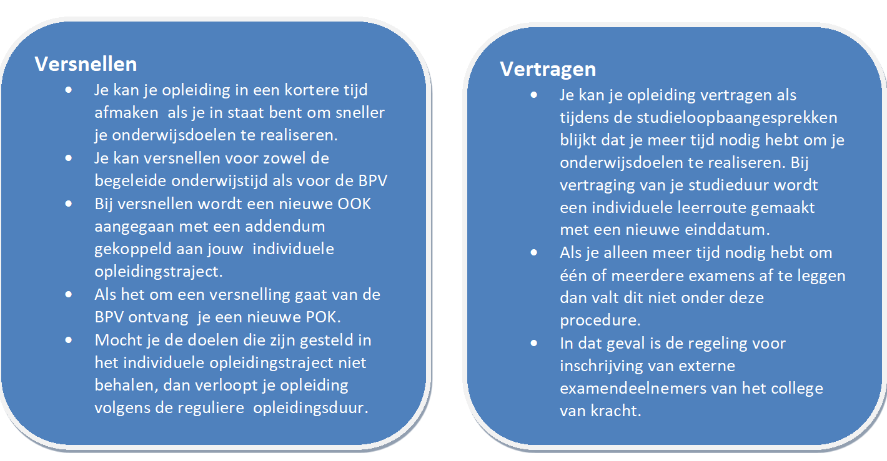
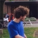

Vakken
NED/ENG/REK
Generieke vakken die belangrijk zijn voor later en diploma.
Pro
Het vak PRO gaat over alle dingen die een ontwikkelaar moet kunnen behalve programmeren.Want later op je stage of je werk moet je natuurlijk het hele vak beheersen. Het hele proces van een app of website noemen we ook welhet “ontwikkeltraject”.
Web
Bij het vak Web leer je eigen websites maken met html en css.
Win
Het vak Win Is bedoeld om studenten zonder programmeer voorkennis de basis aan te bieden van programmeren. Je leert in deze module de basis programmeerprincipes in te zetten om kleine programma’s te maken door middel van de micro:bit.
Slb
Bij Slb worden er gesprekken ingepland met je slber om te praten over je vooruitgang.
Rooster
Indeling Blokken
In Blok A leer je de basis van programmeren in Blok B word het al een stuk moeilijker en in Blok C word het nog moeilijker en je krijgt per blok andere vakken.
Versnellen / Vertragen

Docenten

Steven van Rosendaal

Michel Meeuwesen

Bart Roos
Elton Boekhoudt

Wicher Hulzebosch
Ine Vermeer